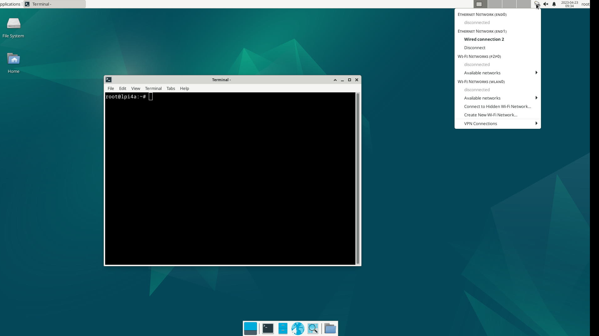
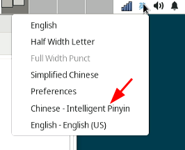
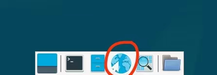
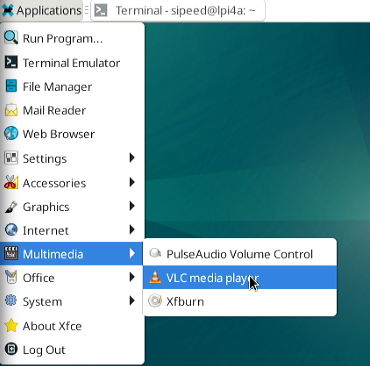

中文
中文桌面系统基础使用
更新历史
| 日期 | 版本 | 作者 | 更新内容 |
|---|---|---|---|
| 2023-07-17 | v1.1 | ztd |
|
| 2023-05-08 | v1.0 | wonder |
|
登录系统
本篇文档以默认的 Debian 桌面系统为例，介绍基础系统使用操作。
将 LicheePi 4A 连接上显示器后，可以看到图形化交互界面了。
在登录界面，输入用户名 sipeed，密码 licheepi 就可以登录进系统了。
总共有三个用户，
root，debian，sipeed，初始密码均为licheepi
有些版本的debian用户的密码为sipeed
0714及以后版本的镜像，默认开启了自动登录，自动登录的用户为 sipeed

打开命令行
在 LicheePi 4A 的 Debian 图形化系统中，使用快捷键 Ctrl + Alt + T 三个组合键可以直接打开命令行终端，来快速方便地操作系统。
0714及以后版本的镜像，默认开启了免密码sudo

连接网络
连接有线网络
LicheePi 4A 由两个千兆网络接口；将已经接通网络的网线插入到 LicheePi 4A 的网络接口中节能实现连接有线网络了。
| 插上网线之前 | 插上网线之后 |
 |
 |
上面两张图对比可以看到：在接上网线前，系统中 Ethernet Network 下面显示着 disconnected, 接上网线后显示 Wired connection |
|
连接无线网络
LicheePi 4A 板载无线模组，支持蓝牙和 wifi 。
从状态栏中的 Avaliable networks 中查看自己想要连接到的无线网络，输入密码之后就自动连接上了。
 |
|
 |
|
在输入密码的弹出窗口中，Wi-Fi adapter 中需要选择 wlan0 来连接网络。
连接蓝牙
找到桌面右上角的蓝牙图标，确认蓝牙功能已经打开，若没打开，右键单击蓝牙图标即可打开：
打开后，左键单击蓝牙图标，可以看到蓝牙设备扫描界面
点击该界面左上角的Search即可搜索蓝牙设备，将蓝牙键鼠、蓝牙耳机等设备的配对模式打开即可被扫描到。
右键选择想要连接的设备，即可连接。成功连接后还可以右键该设备，点击Trust，下次扫描到即可自动连接。

如果在配对后尝试连接蓝牙音频设备时遇到错误br-connection-profile-unavailable，可以尝试以普通用户权限下执行下列命令：
systemctl --user enable pulseaudio
systemctl --user start pulseaudio
sudo apt install bluetooth rfkill blueman bluez bluez-tools pulseaudio-module-bluetooth
若蓝牙图形管理界面无法搜索到设备，也可以现在命令行界面下使用bluetoothctl来进行配对，步骤如下：
bluetoothctl
scan on
# 找到想要配对设备的mac地址
pair 目标设备的mac地址
connect 目标设备的mac地址
上述步骤也可以在蓝牙图形界面进行操作，但蓝牙图形界面能够展示的搜索到的蓝牙设备有限，此时可以先用 bluetoothctl 工具来进行搜索和配对，配对成功后图形界面就会出现这个设备，就可以切换到图形界面进行操作了。
软件安装
在完成网络连接后，即可进行软件包的更新，安装。
软件源
在 Debian 系统中，可以使用 apt (Advanced Packaging Tool) 来进行软件的安装。
安装软件的时候，会从系统指定的软件网站中搜索并下载目标软件，当目标网站访问困难（比如服务器距离太远或者服务器网络不佳）时，可以手动设置编辑软件源网站，改成距离自己当前最近的源，来减少下载时间。
软件源默认使用 /etc/apt/sources.list 文件里面的内容，有额外需要的话可以自行更改。但是要注意需要使用支持 Risc-V 架构的软件源。

升级软件
使用 sudo apt update 可以更新软件列表，一般在更换软件源之后需要使用这个命令。
使用这个命令前，先用 date 命令查看一下时间，若时间不对或连接网络后没有自动更新时间，可以手动更新一下，确保软件源内的软件包是最新版本：
sudo date -s "20230717 12:00:00"
然后使用 sudo apt upgrade package_name 可以更新名称为 package_name 的软件。
比如下面是使用 sudo apt upgrade vim 来更新 vim 这个软件的示例

若使用 sudo apt update 命令时遇到类似下面的提示信息：
Ign:1 https://mirror.iscas.ac.cn/deepin-riscv/deepin-stage1 beige InRelease
Ign:2 https://community-packages.deepin.com/driver driver InRelease
Ign:3 https://mirror.iscas.ac.cn/deepin-riscv/deepin-addons beige InRelease
Ign:2 https://community-packages.deepin.com/driver driver InRelease
Ign:1 https://mirror.iscas.ac.cn/deepin-riscv/deepin-stage1 beige InRelease
Ign:3 https://mirror.iscas.ac.cn/deepin-riscv/deepin-addons beige InRelease
Ign:1 https://mirror.iscas.ac.cn/deepin-riscv/deepin-stage1 beige InRelease
Ign:2 https://community-packages.deepin.com/driver driver InRelease
Ign:3 https://mirror.iscas.ac.cn/deepin-riscv/deepin-addons beige InRelease
Err:2 https://community-packages.deepin.com/driver driver InRelease
Could not resolve 'community-packages.deepin.com'
Err:1 https://mirror.iscas.ac.cn/deepin-riscv/deepin-stage1 beige InRelease
Could not resolve 'mirror.iscas.ac.cn'
Err:3 https://mirror.iscas.ac.cn/deepin-riscv/deepin-addons beige InRelease
Could not resolve 'mirror.iscas.ac.cn'
Reading package lists... Done
W: Failed to fetch https://mirror.iscas.ac.cn/deepin-riscv/deepin-stage1/dists/beige/InRelease Could not resolve 'mirror.iscas.ac'
W: Failed to fetch https://mirror.iscas.ac.cn/deepin-riscv/deepin-addons/dists/beige/InRelease Could not resolve 'mirror.iscas.ac'
W: Failed to fetch https://community-packages.deepin.com/driver/dists/driver/InRelease Could not resolve 'community-packages.deep'
W: Some index files failed to download. They have been ignored, or old ones used instead.
可以尝试如下命令进行修复：
sudo apt-get update --fix-missing
安装程序
可以借助于 apt 命令来安装软件；比如使用 sudo apt install package_name 命令来安装 package_name，下面是使用 apt 来安装 net-tools 的例子。
安装 net-tools 后，就可以使用 ifconfig 命令了。

箭头指向的地方就是常说的 IP 地址了。
若在下载软件的过程中遇到类似下面的提示信息：
W: GPG error: http://archive.ubuntu.com trusty-updates Release: The following signatures couldn't be verified because the public key is not available: NO_PUBKEY 40976EAF437D05B5 NO_PUBKEY 3B4FE6ACC0B21F32
可以尝试用下列命令修复：
sudo apt-key adv --keyserver keyserver.ubuntu.com --recv-keys '替换成报错中的NO_PUBKEY 后面的key值'
# 或使用
gpg --keyserver keyserver.ubuntu.com --recv-keys '替换成报错中的NO_PUBKEY 后面的key值'
SSH
如果你的镜像里没有 ssh 或 sshd 指令，可以先通过以下指令安装：
sudo apt install ssh openssh-server
安装之后即可使用 ssh 来远程登录到其它机器操作，或者在其它机器上使用 ssh 登录到 LicheePi 4A
还可以使用 scp 进行文件传输：
scp demo.zip sipeed@192.168.1.9:~/
输入法
如果你需要进行非 ascii 的字符输入，就需要安装输入法，这里以中文输入法为例，其它语言请自行查找相关教程。
先安装 ibus-libpinyin：
sudo apt install -y ibus-libpinyin
注意这里会消耗约200MB磁盘空间
安装完后，重启板卡，即可在 Applications 下看到 IBus Preference 选项，点击进入设置。

在出现的界面里点击 Input Method，点击 Add，选择 Chinese，选择 Intelligent Pinyin，点击 Add，即可添加中文拼音输入法。

在右上角点击输入法图标，可见以下选项，选择 Chinese - Intelligent Pinyin 即可。

此时即可在系统中顺利输入中文：

注：在 0425 版本镜像中，可能会由于 GPU 支持问题，导致安装了输入法后，出现图形界面卡顿滞后的问题。
办公软件
部分镜像里内置了基础的 Office 办公软件（LibreOffice）：

LibreOffice Calc 即 XLS 功能：

LibreOffice Impress 即 PPT 功能：

LibreOffice Writer 即 WORD 功能：

浏览器
系统内置了 Chromium 浏览器，点击桌面下方的浏览器图标即可使用：

若桌面下方启动栏图标显示异常，可以尝试使用以下命令修复：
cp /etc/xdg/xfce4/panel/default.xml /home/sipeed/.config/xfce4/xfconf/xfce-perchannel-xml/xfce4-panel.xml
chown sipeed:sipeed /home/sipeed/.config/xfce4/xfconf/xfce-perchannel-xml/xfce4-panel.xml
使用搜索引擎：

观看在线视频：

WebGL 支持测试：
注：目前的 0714 镜像中，Chromium 下播放视频或音频时，若为 HDMI 音频输出，会有噪音，可以暂时切换为 Firefox 浏览器来播放。
使用下列命令安装 Firefox 浏览器和相关依赖：
sudo apt install firefox ffmpeg
播放器
系统内置了一些开源播放器，默认使用的播放器是支持播放 4K 视频的 Parole，推荐优先使用支持硬件加速的播放器 Parole。
使用 Parole 播放 4K 视频的效果如下：

同时还支持 kodi，使用效果如下：


也支持 mpv 播放器，可以使用如下命令安装：
sudo apt update
sudo apt install mpv
此外，还预装了 VLC Player 播放器：

使用 VLC Player 查看 MP4 格式的视频效果如下：
编程开发
Python
系统已内置了 python3 环境，可以在终端直接运行：

如果需要安装Python包，则使用：sudo apt install python3-XXX
比如安装pyserial包：sudo apt install python3-serial 即可
C
需要安装 build-essential 包，占用约800MB磁盘空间
sudo apt install build-essential
然后即可使用 gcc 进行相关编译操作：

扩展存储空间
内测版板载 eMMC 容量较小，留给用户的空间只有 2～3GB，如果需要进行大容量存储，则需要扩展存储空间，可选使用 USB 存储或者 TF 存储。
挂载 U 盘
将一个 U 盘插入 LicheePi 4A 的 USB 口后，可以在命令终端窗口使用 dmesg 查看板卡硬件变动信息。
如下是连接 U 盘后，使用 dmesg 在命令行终端看到的最新信息（截取）。

上面的信息显示出了板卡的外设更改信息；从中可以看到有一个大容量 USB 存储设备连接到了 LicheePi 4A。
使用命令 cat /proc/partitions | grep "sd*" 命令可以查看到 U 盘内部的分区个数

以上面的结果为例，其中 sda 指代的是整个 U 盘，sda1 和 sda2 表示的是 U 盘里面的两个分区。
先在桌面系统创建一个文件夹，然后使用 mount 命令将 U 盘的某一分区挂载到该文件夹下。
mkdir ~/Desktop/udisk # 在桌面创建一个名为 udisk 的文件夹
mount /dev/sda2 ~/Desktop/udisk # 挂载 U 盘的 sda2 分区到 udisk 文件夹
| 运行命令前 | 运行命令后 |
 |
 |
运行命令后桌面新增了一个名为 udisk 的文件夹，使用鼠标双击打开 udisk 文件夹后可以看到文件夹里面的内容与 U 盘里面的实际内容一致  |
|
挂载 TF卡
将 TF 卡插入 LicheePi 4A 背面的 TF 卡槽中，即可在系统下看到 /dev/mmcblk1 设备 （/dev/mmcblk0 是 SOM 上的 eMMC）
如果 TF 卡尚未分区或者格式化，用户可以使用 sudo fdisk /dev/mmcblk1 指令进行分区，
然后使用 sudo mkfs.ext4 /dev/mmcblk1p1 或者 sudo mkfs.vfat /dev/mmcblk1p1 对新建的分区进行格式化操作。
如果想作为扩展分区使用，建议使用 ext4；如果想作为与 Windows 交换数据的 TF 卡，建议使用 vfat。
格式化好后，即可与上节内容一样进行挂载操作，确认是否挂载正常。
设置开机挂载
验证手工挂载成功后，你可以进一步设置开机挂载。
只需要在 /etc/fstab 文件内加上需要开机自动挂载的设备信息即可，以下是在最后一行添加TF卡自动挂载的示例。
sipeed@lpi4a:~$ cat /etc/fstab
# UNCONFIGURED FSTAB FOR BASE SYSTEM
/dev/mmcblk0p3 / auto defaults 1 1
/dev/mmcblk0p2 /boot auto defaults 0 0
/dev/mmcblk1p1 /mnt auto defaults 0 2
- 第一个数字：0 表示开机不检查磁盘，1 表示开机检查磁盘；
- 第二个数字：0 表示交换分区，1 代表启动分区（Linux），2 表示普通分区
/dev/mmcblk1p1 也可使用磁盘 UUID，即写成 UUID=xxxx-xxx 的形式，UUID 可以使用sudo blkid查看：
/dev/mmcblk1p1: UUID="033173ff-b3ab-494c-ab14-4dcd656a9214" BLOCK_SIZE="4096" TYPE="ext4" PARTUUID="8e4e28df-01"
VNC远程桌面
安装需要的软件包，远程桌面使用轻量化的 Xfce 桌面环境。
sudo apt install xfce4 xfce4-goodies xorg dbus-x11 x11-xserver-utils
sudo apt install tigervnc-standalone-server tigervnc-common
安装好之后，输入 vncserver 命令，配置相关密码，系统会提示配置密码，根据自身需要设置，第二个密码用于仅供查看的用户登录：
sipeed@lpi4a:~$ vncserver
You will require a password to access your desktops.
Password:
Verify:
Would you like to enter a view-only password (y/n)? n
A view-only password is not used
相关密码会创建文件存储在 ~/.vnc 中。
设置完密码后会接着显示下面的信息
New Xtigervnc server 'lpi4a:1 (sipeed)' on port 5901 for display :1.
Use xtigervncviewer -SecurityTypes VncAuth -passwd /tmp/tigervnc.I5Af7X/passwd :1 to connect to the VNC server.
注意上面输出中的主机名后有一个 :1，这表示 VNC 服务器的显示端口号。 VNC 服务器将会监听端口 5901，即 5900+1。类似的，运行 vncserver 命令创建第二个示例时，将使用下一个显示端口 :2，对于这个显示端口，监听的端口则为 5902。
接下来，先 kill 掉刚刚创建的 VNC 实例，先进行一些配置。
vncserver -kill :1
xstartup 文件是 TigerVNC 服务器启动时运行的脚本，创建并编辑文件 ~/.vnc/xstartup，写入下面的内容：
#!/bin/sh
unset SESSION_MANAGER
unset DBUS_SESSION_BUS_ADDRESS
exec startxfce4
并赋予权限
chmod +x ~/.vnc/xstartup
接下来增加 VNC 服务器的启动参数，创建并编辑 ~/.vnc/config 文件，加入需要的启动参数，比如想要设置启动时的分辨率和 dpi，可以写入下面的内容：
geometry=your_prefer_resolution
dpi=your_prefer_dpi
若因为防火墙连接不上 VNC，可以使用 ufw 来添加允许的端口，比如使用 VNC服务器的显示端口5901：
sudo ufw allow 5901
最后，就可以运行 vnc 服务器了：
vncserver -localhost no
接下来，为了访问远程主机（LPi4A），我们需要在本地主机（你正在使用的电脑）上下载安装 vncviewer，安装完成后，启动 VNCviewer，在窗口顶部输入远程主机的 IP 地址和端口号（格式为 `你的IP地址:VNC服务器的显示端口号）：

默认会根据网络情况来设置远程桌面的画质，低画质时可能会导致远程桌面画面颜色异常，此时可以手动指定为高画质。
在第一次成功连接后，右键单击新出现的会话窗口，选择 properties：

修改 Options 选项中的 Picture quality 为 High：

显示的效果如下：

btop
btop 是一个兼顾美观与实用性的资源监视器，显示处理器、内存、磁盘、网络和进程的使用情况和统计信息。
使用以下命令可以安装：
sudo apt install btop
然后在命令行中运行 btop 命令即可使用，效果如下：
更多
欢迎投稿～ 投稿接受后可得￥5～150（$1~20）优惠券！